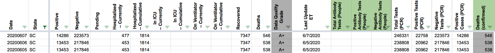
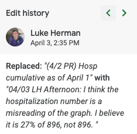

#1111: [SC] Patch 02/18, 02/18, and 02/20 recoveries error
Issue number 1111
hmhoffman opened this issue on February 25, 2021, 7:02 AM PST
State: SC
Dates affected: 02/18/21 - 02/20/21
Describe the issue: On February 18, 2021, we incorrectly calculated South Carolina's recoveries as "individuals for which we have symptom onset data" multiplied by .90, but it should have been .901.
Comments
#1111: [SC] Patch 02/18, 02/18, and 02/20 recoveries error
Issue number 1111
hmhoffman opened this issue on February 25, 2021, 7:02 AM PST
State: SC
Dates affected: 02/18/21 - 02/20/21
Describe the issue: On February 18, 2021, we incorrectly calculated South Carolina's recoveries as "individuals for which we have symptom onset data" multiplied by .90, but it should have been .901.
Comments
After further investigation, it was discovered that no error was made, and no patch is necessary.
#1078: [SC] Patch 01/08/21 Recovered
Issue number 1078
hmhoffman opened this issue on January 25, 2021, 7:34 AM PST
State: SC
Dates affected: 01/08/21
Describe the issue: On January 8, 2021, South Carolina's Recovered was calculated incorrectly. This error was patched on January 25, 2021.
Comments
Rows edited: 1 SC 2021-01-08 recovered: 161183 (was 164575)
#1078: [SC] Patch 01/08/21 Recovered
Issue number 1078
hmhoffman opened this issue on January 25, 2021, 7:34 AM PST
State: SC
Dates affected: 01/08/21
Describe the issue: On January 8, 2021, South Carolina's Recovered was calculated incorrectly. This error was patched on January 25, 2021.
Comments
Rows edited: 1 SC 2021-01-08 recovered: 161183 (was 164575)
#779: [SC] Incorrect recovered value entered On 8/18.
Issue number 779
whobody opened this issue on August 19, 2020, 3:53 PM PDT
Labels Historical Data
State or US: South Carolina
Describe the problem
The recovered amount was entered incorrectly on 8/18. Someone used the wrong n value for the calculation.
Link to data source
https://www.scdhec.gov/infectious-diseases/viruses/coronavirus-disease-2019-covid-19/sc-demographic-data-covid-19

Comments
Based on the screenshot, a recovered formula of =FLOOR(49676*0.91,1) is needed. The resulting correct value of 45205 was entered in States Daily.
Before: After:
#732: [SC] Incorrect PCR test negatives input on 8/3
Issue number 732
brianskli opened this issue on August 4, 2020, 1:43 PM PDT
Labels Historical Data
State or US: South Carolina
Describe the problem An incorrect quantity for negative PCR tests was input on 8/3.
Link to data source https://scdhec.gov/infectious-diseases/viruses/coronavirus-disease-2019-covid-19/sc-testing-data-projections-covid-19
Comments
Using screenshots, it was found that 666538 was input instead of 614339 (https://covid-tracking-project-data.s3.us-east-1.amazonaws.com/state_screenshots/SC/SC-20200804-122613.png). States Daily was edited accordingly.
Before: After:
#693: [SC] PCL Historicals: Backfill Positive Cases PCR values (before 4/29,5-3-5/17) from Positive cases
Issue number 693
jesseandersonumd opened this issue on July 29, 2020, 7:32 AM PDT
Labels Backfill Historical Data
State: SC
Dates impacted: 5/03-5/17, before 4/29

Issue: We had a gap in data reporting for positive cases (PCR) from 5/03-5/17. We reported values prior to 5/03. We need to backfill these values. Prior to 6/16 all the values reported by South Caroline were confirmed cases.
Comments
Hi @jesseandersonumd Do we have the source for this or do we need back-fill team to get it? I am not sure based on the issue here..
Update (8/1): The gap in the values from 5/03-5/17 for positive cases (PCR) appears to easily be remedied by a simple copy and paste from positive cases (people, confirmed and probable). I think it might be a good idea for back-fill to confirm that this is doable. The source would simply be where we usually source data for these values, which is here: https://www.scdhec.gov/infectious-diseases/viruses/coronavirus-disease-2019-covid-19/sc-testing-data-projections-covid-19. Thank you for asking, Michal, and calling attention to this issue!
This issue has been automatically marked as stale because it has not had recent activity. It will be closed if no further activity occurs. Thank you for your contributions!
This issue has been closed because it was stale for 15 days, and there was no further activity on it for 10 days. You can feel free to re-open it if the issue is important, and label it as "not stale."
Before and After snapshots in the attached sheet GH 693 - SC - Positive Cases PCR Timeseries Backfill.xlsx
#510: [SC Historical] 6/6 Numbers
Issue number 510
schmian opened this issue on June 22, 2020, 7:34 AM PDT
Labels Historical Data
SC data was not updated on 6/6. The last screenshot of the day has the new data.
Comments
The current hospitalization number is on a different page that doesn't seem to be screenshotted, but I was able to update everything else using the last 6/6 screenshot.
Before: 
After:
#477: Missing data for hospitalizedCurrently in SC
Issue number 477
cout opened this issue on June 7, 2020, 12:30 PM PDT
Labels Data quality stale
State or US: SC
Describe the problem
There is no hospitalizedCurrently data for South Carolina prior to May 21.
Link to data source The number of hospitalized COVID-19 patients was added to the daily update starting on April 29. These updates are available from SC DHEC in URLs such as: https://www.dhec.sc.gov/news-releases/south-carolina-announces-latest-covid-19-update-april-29-2020
I was able to scrape the data for all dates for which hospitalizedCurrently is blank.
Date,beds_available,beds_in_use,beds_in_use_covid
2020/04/29,4480,6932,311
2020/04/30,4512,6894,307
2020/05/01,4653,6743,300
2020/05/02,4824,6573,370
2020/05/03,5016,6389,310
2020/05/05,3241,6415,447
2020/05/06,3461,6601,485
2020/05/07,3345,6674,484
2020/05/08,3388,6622,460
2020/05/09,3482,6514,461
2020/05/10,3620,6354,446
2020/05/14,3301,7077,443
2020/05/15,3405,6970,423
2020/05/16,3567,6799,434
2020/05/17,3798,6583,392
2020/05/18,3792,6481,412
2020/05/19,3292,7046,444
2020/05/20,3030,7209,414
Most of the covidtracking data for May 21 and later do match what I scraped, though there are a few dates that do not:
Date,beds_available,beds_in_use,beds_in_use_covid
2020/05/21,3142,7199,438
2020/06/05,3055,7337,482
2020/06/06,3055,7337,482
Comments
This issue has been automatically marked as stale because it has not had recent activity. It will be closed if no further activity occurs. Thank you for your contributions!
This issue has been closed because it was stale for 15 days, and there was no further activity on it for 10 days. You can feel free to re-open it if the issue is important, and label it as "not stale."
#463: [SC Historicals] Cases when SC reporting seems to not match CTP reporting
Issue number 463
muamichali opened this issue on May 28, 2020, 8:33 AM PDT
Labels Data quality stale
From Front https://app.frontapp.com/open/msg_dlyhb2p
Here is the Excel file for South Carolina. The individual numbers are colored. Black is for when the numbers have been verified through the daily state reports. Blue is for when I could not find a copy of the daily report and relied on the numbers from The COVID Tracking Project. Orange is when I verified the numbers through a tertiary source. This is almost always the Twitter feed for the state's Department of Health. Red is for when I verified the number through the state's daily reports and those numbers did not correspond to the one presented in The COVID Tracking Project.
The red numbers can be compared to the daily state screenshots. Sometimes the variance is minor. In South Carolina, The COVID Tracking Project had several instances where the numbers were repeated from date to date when the numbers did change in the daily screenshots.
Comments
This issue has been automatically marked as stale because it has not had recent activity. It will be closed if no further activity occurs. Thank you for your contributions!
This issue has been closed because it was stale for 15 days, and there was no further activity on it for 10 days. You can feel free to re-open it if the issue is important, and label it as "not stale."
This issue has been automatically marked as stale because it has not had recent activity. It will be closed if no further activity occurs. Thank you for your contributions!
This issue has been closed because it was stale for 15 days, and there was no further activity on it for 10 days. You can feel free to re-open it if the issue is important, and label it as "not stale."
#458: [SC Historicals] 13 cases where the state changed the data but our report does not reflect it
Issue number 458
muamichali opened this issue on May 27, 2020, 5:46 AM PDT
Labels stale
Secondly, there are several states that for some reason on the COVID Tracking Project sometimes repeat the numbers from day to day. This happens at South Carolina in 13 instances. In none of those 13 instances did the numbers fail to change in the daily reports.
From https://app.frontapp.com/open/msg_dl7uc7l
Comments
Is this the same as #375?
This issue has been automatically marked as stale because it has not had recent activity. It will be closed if no further activity occurs. Thank you for your contributions!
This issue has been closed because it was stale for 15 days, and there was no further activity on it for 10 days. You can feel free to re-open it if the issue is important, and label it as "not stale."
#318: SC recoveries
Issue number 318
goldfarb opened this issue on April 28, 2020, 9:12 AM PDT
Labels stale
Past Hospitalization values were calculated as a percentage of the total cases, rather than of the number specified in the text.

For 4/16-4/19 2,063

For 4/20-4/22 72% of ? =

SC had 4,377 total cases at the time

but the recovery percentages are not for the full case number
For 4/23- 73% of 3,878 = 2,830

Comments
This issue has been automatically marked as stale because it has not had recent activity. It will be closed if no further activity occurs. Thank you for your contributions!
This issue has been automatically marked as stale because it has not had recent activity. It will be closed if no further activity occurs. Thank you for your contributions!
#267: SC data with 0 increases does not match 6PM screenshot
Issue number 267
nhinze opened this issue on April 23, 2020, 9:13 AM PDT
Labels stale
SC data for 4/20, 4/16, 4/13, 4/6, 4/3, 3/27, 3/19 show 0 new cases, but the evening screenshot shows that the total cases increased that day.
Comments
This issue has been automatically marked as stale because it has not had recent activity. It will be closed if no further activity occurs. Thank you for your contributions!
This issue has been closed because it was stale for 15 days, and there was no further activity on it for 10 days. You can feel free to re-open it if the issue is important, and label it as "not stale."
#185: SC Hospitalization numbers 3/31 - 4/2
Issue number 185
hammer opened this issue on April 12, 2020, 2:51 AM PDT
SC's hospitalization numbers look wrong from 3/31 - 4/2 https://covidtracking.com/data/state/south-carolina.
- 4/2: the number "896" appears to come from a survey of 896 cases in which 27% were reported to be hospitalized at time of reported illness. Later days use 896 * .27 = 241 as cumulative number hospitalized, so we should probably just change this day to 241.
- 3/31 - 4/1: I have no theory about the origin of these numbers. There's a survey of 424 cases in which 24% are reported hospitalized at time of illness; using the logic from 4/1 we'd have 424 * .24 = 101 as a lower bound on cumulative.
Comments
Also, the data goes from 129 to 259 to 349 to 241 to 896 and back down to 241
This issue has been automatically marked as stale because it has not had recent activity. It will be closed if no further activity occurs. Thank you for your contributions!
Hi @hammer and @mlgnight,
Thanks for catching this. The 4/2 number does look like a misreading of the charts. According to records we noticed the mistake for hospitalizations 4/3 and corrected but did not update the historical data.

I've gone in and updated that value.
The values from 3/26 - 4/1 do appear to have no origin. To maintain consistency with the later policy (past 4/2) of using the hospitalized numbers reporting the number from "Hospitalization Reported at Time of Reported Illness," I've gone through screenshots for those days and changed the number to 102 for all cases, as that chart reflects.
Before:
 After:
After:
#24: SC: Data not updating
Issue number 24
eric-czech opened this issue on March 20, 2020, 5:41 AM PDT
Labels Data quality
I noticed that the SC counts didn't update last night (https://covidtracking.com/data/state/south-carolina/):

Is there some way to verify that this was due to the underlying source (currently https://scdhec.gov/monitoring-testing-covid-19) not updating rather than some collection bug?
Similarly, is it possible to get a sense of how often underlying source pages are changing? I'm not sure if the SC monitoring page is being updated multiple times daily or not, and I thought something collected by the current crawlers might give me that sense.
Comments
@eric-czech the current count for SC is 81 so looks like this was due to either SC reporting late or us not checking it near enough to 4 pm. It's an acknowledged caveat with our data: https://covidtracking.com/newsroom-expert-faq. We do keep a log of each time a state has been checked, so we could conceivably generate a report on which states update multiple times per day, but that's not something we do currently nor do we plan to do it soon.
@eric-czech the current count for SC is 81 so looks like this was due to either SC reporting late or us not checking it near enough to 4 pm. It's an acknowledged caveat with our data: https://covidtracking.com/newsroom-expert-faq. We do keep a log of each time a state has been checked, so we could conceivably generate a report on which states update multiple times per day, but that's not something we do currently nor do we plan to do it soon.
After further investigation, it was discovered that no error was made, and no patch is necessary.